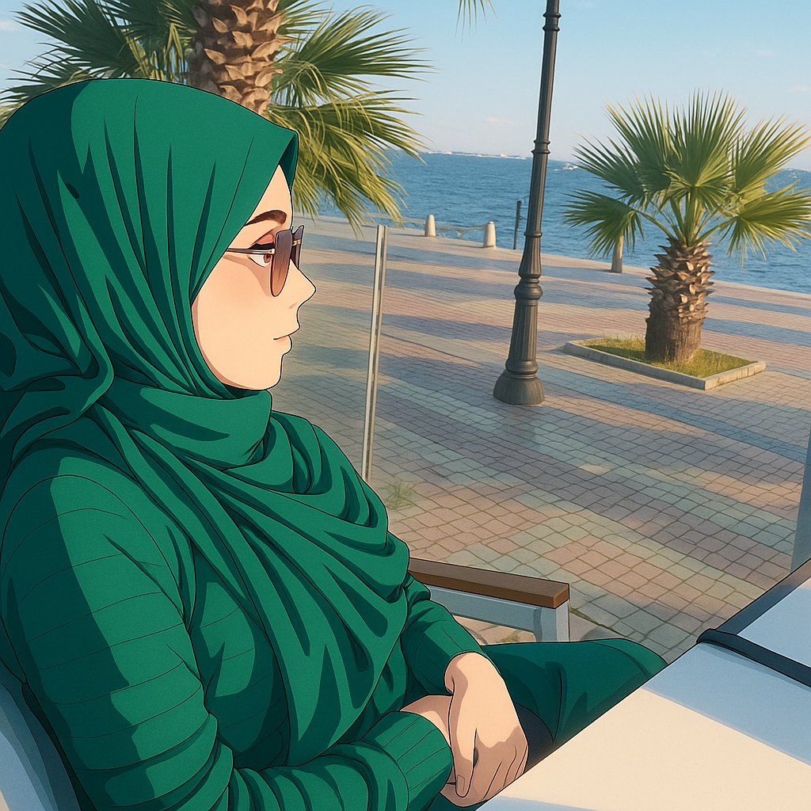
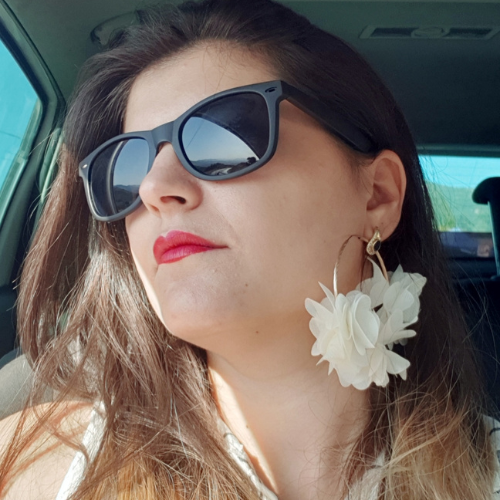
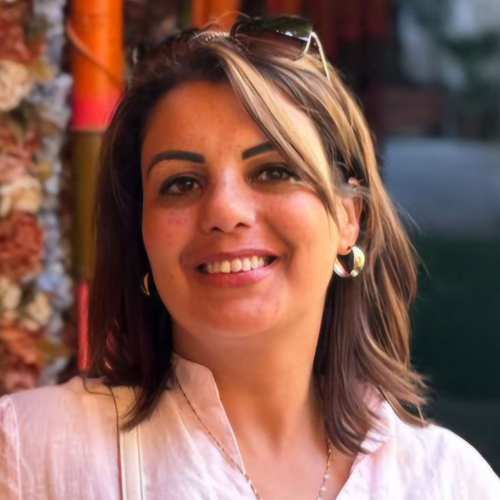

Si vous la cherchez, elle est sûrement plongée dans du code ou en
train de discuter avec son meilleur ami… son ordinateur. Toujours
prête à déboguer le monde (ou au moins une ligne de code), elle
transforme café en fonctionnalités et bugs en challenges !

Imen
du sourire au clavier
Ancienne prothésiste dentaire, aujourd’hui développeuse front en
devenir. Précise, curieuse et déterminée, je code avec le
sourire et une bonne dose de rigueur. Accro au code propre, au
travail bien fait… et au café. Toujours motivée, toujours connectée !

Chahinez
De la salle de classe au code source
Ancienne enseignante passionnée par le digital, je me reconvertis avec
détermination dans le développement web et mobile. Entre pédagogie,
fibre optique et serveurs de données, j’ai plus d’une corde à mon
clavier. Mon but reprendre les bases, viser l’excellence… et coder
l’avenir avec ambition !

Syrine
Du stylisme au CSS
Ex-styliste et comptable malgré moi, je me réinvente en développeuse
avec passion (et une bonne dose de challenge perso). Le code, le café
et l’obstination sont mes meilleurs alliés. Je râle peut-être un peu…
mais même Google fatigue avant moi ! Et en bonus : la marrante du
groupe, toujours un mot pour faire rire (même en plein bug collectif).